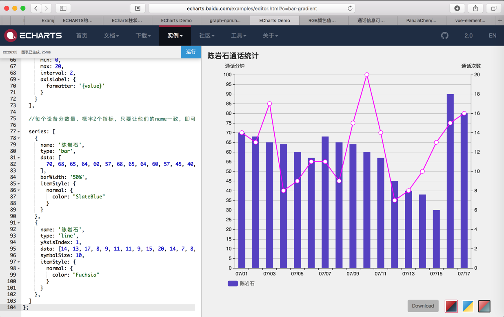

柱状图
柱状图 带折线 - 通话统计
代码：
option = {
title: {
left: 'top',
text: '陈岩石通话统计',
show: true
},
tooltip: {
trigger: 'axis',
formatter: '{a}:{c}',
axisPointer: {
type: 'cross',
crossStyle: {
color: '#999'
}
}
},
// grid: {
// show: false,
// top: '30',
// bottom: '60',
// right: '60',
// left: '60'
// },
legend: {
show: true,
selectedMode: 'single', //设置显示单一图例的图形，点击可切换
bottom: 10,
left: 50,
textStyle: {
color: '#666',
fontSize: 12
},
itemGap: 20,
data: ['陈岩石'],
inactiveColor: '#ccc'
},
xAxis: [
{
type: 'category',
data: [
'07/01', '07/02', '07/03', '07/04', '07/05', '07/06', '07/07', '07/08', '07/09', '07/10',
'07/11', '07/12', '07/13', '07/14', '07/15', '07/16', '07/17',
],
axisPointer: {
type: 'shadow'
},
axisTick: {
show: true,
interval: 0
},
}
],
//设置两个y轴，左边显示数量，右边显示概率
yAxis: [{
type: 'value',
name: '通话分钟',
show: true,
interval: 5,
},
{
type: 'value',
name: '通话次数',
min: 0,
max: 20,
interval: 2,
axisLabel: {
formatter: '{value}'
}
}
],
//每个设备分数量、概率2个指标，只要让他们的name一致，即可通过，legeng进行统一的切换
series: [
{
name: '陈岩石',
type: 'bar',
data: [
70, 68, 65, 64, 60, 57, 68, 65, 64, 60, 57, 45, 40, 38, 30, 90, 80
],
barWidth: '50%',
itemStyle: {
normal: {
color: "SlateBlue"
}
}
},
{
name: '陈岩石',
type: 'line',
yAxisIndex: 1,
data: [14, 13, 17, 8, 9, 11, 11, 9, 15, 20, 14, 7, 8, 10, 13, 15, 16],
symbolSize: 10,
itemStyle: {
normal: {
color: "Fuchsia"
}
}
},
]
};
效果：
